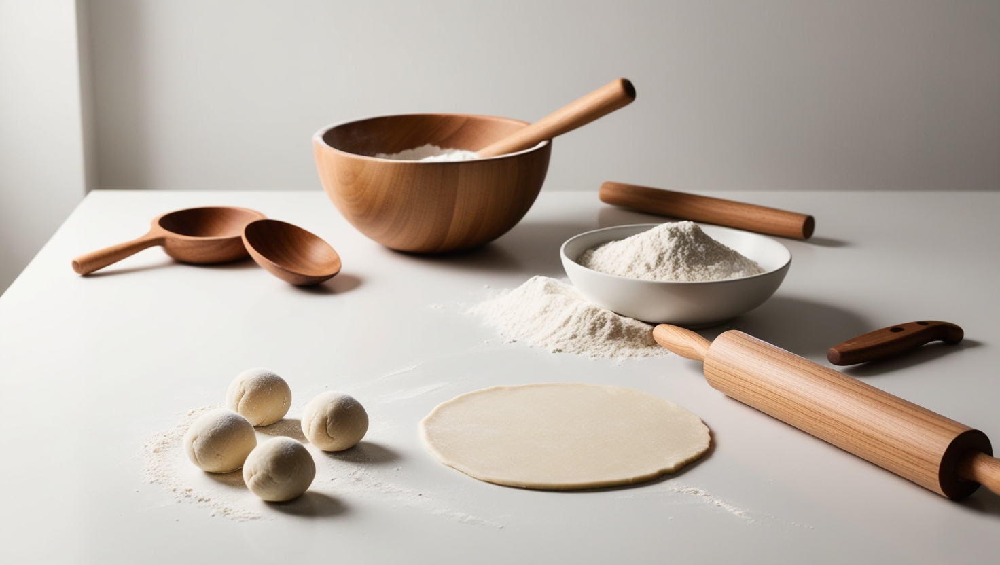

Step 1
In a bowl, mix the flour with the salt and gradually add the hot water while mixing with chopsticks or a wooden spoon. Knead for about 8-10 minutes until you have a smooth and elastic dough. Cover with a damp cloth and let it rest for 30 minutes. Divide the dough into small balls the size of a walnut and roll them out into thin circles with a rolling pin.
